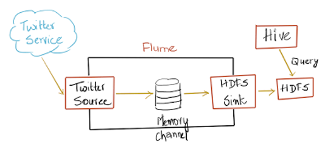
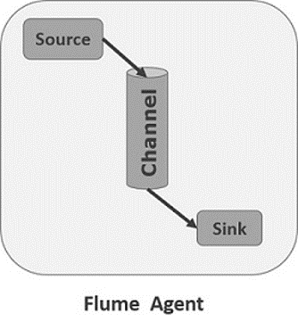

Apache Flume
Contents
Apache Flume¶

Apache Flume is a
distributed: multiple agents manage multiple sources and sinks
reliable: events are staged in the channel and delivered using a transactional approach
available: open source, mature
system
for efficiently:
collecting: make them avalaible
aggregating: merge together from different sources
moving: transfer from one place to another
large amounts of log data: i.e. able to manage big data
from many different sources: refered both type of data and different place
to a centralized data store
The use of Apache Flume is not only restricted to log data aggregation.
Since data sources are customizable, Flume can be used to transport massive quantities of event data including but not limited to:
network traffic data
social-media-generated data
email messages
and pretty much any data source possible
Data Flow¶

Event¶
A Flume event is defined as a unit of data flow having a byte payload and an optional set of string attributes
Source¶
A Flume source consumes events delivered to it by an external source like a web server.
The external source sends events to Flume in a format that is recognized by the target Flume source.
Sources can be pollable or event driven

Channel¶
When a Flume source receives an event, it stores it into one or more channels.
The channel is a passive store that keeps the event until it’s consumed by a Flume sink
A channel is a conduit for events between a source and a sink. Channels also dictate the durability of event delivery between a source and a sink.

Sink¶
A sink is the counterpart to the source in that it is a destination for data in Flume.
Some of the builtin sinks that are included with Flume are
the Hadoop Distributed File System sink which writes events to HDFS in various ways
the logger sink which simply logs all events received
the null sink which is Flume’s version of /dev/null
Agent¶
A Flume agent puts together the components to be connected:
source
channel
sink
components are named and configured for each channel
Multiple agent can be run at the same time in the same process

Configuration¶
# example.conf: A single-node Flume configuration
# Name the components on this agent
a1.sources = r1
a1.sinks = k1
a1.channels = c1
# Describe/configure the source
a1.sources.r1.type = netcat
a1.sources.r1.bind = localhost
a1.sources.r1.port = 44444
# Describe the sink
a1.sinks.k1.type = logger
# Use a channel which buffers events in memory
a1.channels.c1.type = memory
a1.channels.c1.capacity = 1000
a1.channels.c1.transactionCapacity = 100
# Bind the source and sink to the channel
a1.sources.r1.channels = c1
a1.sinks.k1.channel = c1
Docker¶
Dockerfile¶
FROM openjdk:8-jre-alpine
MAINTAINER Salvo Nicotra
ENV PATH /opt/flume/bin:$PATH
RUN apk update \
&& apk add --no-cache wget bash \
&& mkdir -p /opt/flume && wget -qO- http://archive.apache.org/dist/flume/1.9.0/apache-flume-1.9.0-bin.tar.gz | tar zxvf - -C /opt/flume --strip 1
RUN mkdir /var/log/netcat
ADD start-flume.sh /opt/flume/bin/start-flume
# Copy All conf here
ADD conf/* /opt/flume/conf/
# Add compiled lib
ADD lib/* /opt/flume/lib/
EXPOSE 44444
ENTRYPOINT [ "start-flume" ]
Wrapper¶
#!/bin/bash
set -v
FLUME_CONF_DIR=/opt/flume/conf
FLUME_AGENT_NAME=a1
[[ -d "${FLUME_CONF_DIR}" ]] || { echo "Flume config dir not mounted in /opt/flume-config"; exit 1; }
[[ -z "${FLUME_AGENT_NAME}" ]] && { echo "FLUME_AGENT_NAME required"; exit 1; }
echo "Starting flume agent : ${FLUME_AGENT_NAME}"
COMMAND="flume-ng agent \
-c ${FLUME_CONF_DIR} \
-f ${FLUME_CONF_DIR}/${FLUME_CONF_FILE}\
-n ${FLUME_AGENT_NAME} \
-Dflume.root.logger=INFO,console
-Dorg.apache.flume.log.printconfig=true
-Dorg.apache.flume.log.rawdata=true
"
${COMMAND}
Flume Hello World¶
#!/usr/bin/env bash
# cd tap/bin
# Only once
docker network create --subnet=10.0.100.1/24 tap
# Build
docker build ../flume/ --tag tap:flume
# Run
docker run --network tap --ip 10.0.100.10 -p 44444:44444 -e FLUME_CONF_FILE=netcatExample.conf tap:flume
Data Serialization¶
In computing, serialization (or serialisation) is the process of translating data structures or object state into a format that can be stored (for example, in a file or memory buffer) or transmitted (for example, across a network connection link) and reconstructed later (possibly in a different computer environment).[1]
When the resulting series of bits is reread according to the serialization format, it can be used to create a semantically identical clone of the original object. For many complex objects, such as those that make extensive use of references, this process is not straightforward. Serialization of object-oriented objects does not include any of their associated methods with which they were previously linked.
This process of serializing an object is also called marshalling an object in some situations.[1][2] The opposite operation, extracting a data structure from a series of bytes, is deserialization (also called unmarshalling).
Types of Serialization¶
Avro¶
Apache Avro is a remote procedure call and data serialization framework developed within Apache’s Hadoop project.
It uses JSON for defining data types and protocols, and serializes data in a compact binary format.
Since it’s a row based format, it’s better to use when all fields needs to be accessed Files support block compression and are splittable Suitable for write intensive operation

Flume Source¶
Avro¶
Listens on Avro port and receives events from external Avro client streams.
When paired with the built-in Avro Sink on another (previous hop) Flume agent, it can create tiered collection topologies.
a1.sources = r1
a1.channels = c1
a1.sources.r1.type = avro
a1.sources.r1.channels = c1
a1.sources.r1.bind = 0.0.0.0
a1.sources.r1.port = 4141
Exec¶
Exec source runs a given Unix command on start-up and expects that process to continuously produce data on standard out (stderr is simply discarded, unless property logStdErr is set to true). If the process exits for any reason, the source also exits and will produce no further data. This means configurations such as cat [named pipe] or tail -F [file] are going to produce the desired results where as date will probably not - the former two commands produce streams of data where as the latter produces a single event and exits.
a1.sources = r1
a1.channels = c1
a1.sources.r1.type = exec
a1.sources.r1.command = tail -F /var/log/secure
a1.sources.r1.channels = c1
Twitter Firehose¶
Experimental source that connects via Streaming API to the 1% sample twitter firehose, continously downloads tweets, converts them to Avro format and sends Avro events to a downstream Flume sink.
Requires the consumer and access tokens and secrets of a Twitter developer account. Required properties are in bold.
Other Sources¶
Kafka
Netcat
Syslog
Http
Custom
https://flume.apache.org/releases/content/1.9.0/FlumeUserGuide.html#flume-sources
Flume Channels¶
Memory¶
The events are stored in an in-memory queue with configurable max size. It’s ideal for flows that need higher throughput and are prepared to lose the staged data in the event of a agent failures. Required properties are in bold.
Property Name |
Default |
Description |
|---|---|---|
type |
– |
The component type name, needs to be memory |
capacity |
100 |
The maximum number of events stored in the channel |
transactionCapacity |
100 |
The maximum number of events the channel will take from a source or give to a sink per transaction |
keep-alive |
3 |
Timeout in seconds for adding or removing an event |
byteCapacityBufferPercentage |
20 |
Defines the percent of buffer between byteCapacity and the estimated total size of all events in the channel, to account for data in headers. See below. |
byteCapacity |
see description |
maximum total bytes of memory allowed as a sum of all events in this channel. The implementation only counts the Event body, which is the reason for providing the byteCapacityBufferPercentage configuration parameter as well. Defaults to a computed value equal to 80% of the maximum memory available to the JVM |
JDBC¶
The events are stored in a persistent storage that’s backed by a database. The JDBC channel currently supports embedded Derby. This is a durable channel that’s ideal for flows where recoverability is important.
Kafka¶
The events are stored in a Kafka cluster (must be installed separately). Kafka provides high availability and replication, so in case an agent or a kafka broker crashes, the events are immediately available to other sinks
The Kafka channel can be used for multiple scenarios:
With Flume source and sink - it provides a reliable and highly available channel for events
With Flume source and interceptor but no sink - it allows writing Flume events into a Kafka topic, for use by other apps
With Flume sink, but no source - it is a low-latency, fault tolerant way to send events from Kafka to Flume sinks such as HDFS, HBase or Solr
This currently supports Kafka server releases 0.10.1.0 or higher. Testing was done up to 2.0.1 that was the highest avilable version at the time of the release.
File¶
Property Name |
Default |
Description |
|---|---|---|
type |
– |
The component type name, needs to be file. |
checkpointDir |
~/.flume/file-channel/checkpoint |
The directory where checkpoint file will be stored |
useDualCheckpoints |
false |
Backup the checkpoint. If this is set to true, backupCheckpointDir must be set |
backupCheckpointDir |
– |
The directory where the checkpoint is backed up to. This directory must not be the same as the data directories or the checkpoint directory |
dataDirs |
~/.flume/file-channel/data |
Comma separated list of directories for storing log files. Using multiple directories on separate disks can improve file channel peformance |
transactionCapacity |
10000 |
The maximum size of transaction supported by the channel |
checkpointInterval |
30000 |
Amount of time (in millis) between checkpoints |
maxFileSize |
2146435071 |
Max size (in bytes) of a single log file |
minimumRequiredSpace |
524288000 |
Minimum Required free space (in bytes). To avoid data corruption, File Channel stops accepting take/put requests when free space drops below this value |
capacity |
1000000 |
Maximum capacity of the channel |
keep-alive |
3 |
Amount of time (in sec) to wait for a put operation |
use-log-replay-v1 |
false |
Expert: Use old replay logic |
use-fast-replay |
false |
Expert: Replay without using queue |
checkpointOnClose |
true |
Controls if a checkpoint is created when the channel is closed. Creating a checkpoint on close speeds up subsequent startup of the file channel by avoiding replay. |
encryption.activeKey |
– |
Key name used to encrypt new data |
encryption.cipherProvider |
– |
Cipher provider type, supported types: AESCTRNOPADDING |
encryption.keyProvider |
– |
Key provider type, supported types: JCEKSFILE |
encryption.keyProvider.keyStoreFile |
– |
Path to the keystore file |
encrpytion.keyProvider.keyStorePasswordFile |
– |
Path to the keystore password file |
encryption.keyProvider.keys |
– |
List of all keys (e.g. history of the activeKey setting) |
encyption.keyProvider.keys.*.passwordFile |
– |
Path to the optional key password file |
Others¶
Spillable Memory
Pseudo Transaction
Custom
HDFS¶
HDFS is the primary distributed storage used by Hadoop applications. A HDFS cluster primarily consists of a NameNode that manages the file system metadata and DataNodes that store the actual data.
The HDFS architecture diagram depicts basic interactions among NameNode, the DataNodes, and the clients. Clients contact NameNode for file metadata or file modifications and perform actual file I/O directly with the DataNodes.

The following are some of the salient features that could be of interest to many users.
Hadoop, including HDFS, is well suited for distributed storage and distributed processing using commodity hardware. It is fault tolerant, scalable, and extremely simple to expand. MapReduce, well known for its simplicity and applicability for large set of distributed applications, is an integral part of Hadoop.
HDFS is highly configurable with a default configuration well suited for many installations. Most of the time, configuration needs to be tuned only for very large clusters.
Hadoop is written in Java and is supported on all major platforms.
Hadoop supports shell-like commands to interact with HDFS directly.
The NameNode and Datanodes have built in web servers that makes it easy to check current status of the cluster.
Start Hadoop in Docker¶
Check Out
https://github.com/big-data-europe/docker-hadoop
Edit docker-compose.yml
version: "3"
services:
namenode:
image: bde2020/hadoop-namenode:2.0.0-hadoop3.2.1-java8
container_name: namenode
restart: always
ports:
- 9870:9870
- 9000:9000
volumes:
- hadoop_namenode:/hadoop/dfs/name
environment:
- CLUSTER_NAME=test
env_file:
- ./hadoop.env
networks:
tap:
ipv4_address: 10.0.100.71
datanode:
image: bde2020/hadoop-datanode:2.0.0-hadoop3.2.1-java8
container_name: datanode
restart: always
volumes:
- hadoop_datanode:/hadoop/dfs/data
environment:
SERVICE_PRECONDITION: "namenode:9870"
env_file:
- ./hadoop.env
networks:
tap:
ipv4_address: 10.0.100.72
resourcemanager:
image: bde2020/hadoop-resourcemanager:2.0.0-hadoop3.2.1-java8
container_name: resourcemanager
restart: always
environment:
SERVICE_PRECONDITION: "namenode:9000 namenode:9870 datanode:9864"
env_file:
- ./hadoop.env
networks:
tap:
ipv4_address: 10.0.100.73
nodemanager1:
image: bde2020/hadoop-nodemanager:2.0.0-hadoop3.2.1-java8
container_name: nodemanager
restart: always
environment:
SERVICE_PRECONDITION: "namenode:9000 namenode:9870 datanode:9864 resourcemanager:8088"
env_file:
- ./hadoop.env
networks:
tap:
ipv4_address: 10.0.100.74
historyserver:
image: bde2020/hadoop-historyserver:2.0.0-hadoop3.2.1-java8
container_name: historyserver
restart: always
environment:
SERVICE_PRECONDITION: "namenode:9000 namenode:9870 datanode:9864 resourcemanager:8088"
volumes:
- hadoop_historyserver:/hadoop/yarn/timeline
env_file:
- ./hadoop.env
networks:
tap:
ipv4_address: 10.0.100.75
volumes:
hadoop_namenode:
hadoop_datanode:
hadoop_historyserver:
networks:
tap:
external: true
cd /home/nics/Dev/docker-hadoop
docker-compose up
# Remember to use docker compose and not compose 3
Service |
Address |
|---|---|
Namenode |
|
History server |
|
Datanode |
|
Nodemanager |
|
Resource manager |
See also
https://shortcut.com/developer-how-to/how-to-set-up-a-hadoop-cluster-in-docker
Flume Sinks¶
HFDS¶
This sink writes events into the Hadoop Distributed File System (HDFS). It currently supports creating text and sequence files. It supports compression in both file types.
The files can be rolled (close current file and create a new one) periodically based on the elapsed time or size of data or number of events. It also buckets/partitions data by attributes like timestamp or machine where the event originated.
The HDFS directory path may contain formatting escape sequences that will replaced by the HDFS sink to generate a directory/file name to store the events.
Using this sink requires hadoop to be installed so that Flume can use the Hadoop jars to communicate with the HDFS cluster. Note that a version of Hadoop that supports the sync() call is required.
Escape Sequences¶
Alias |
Description |
|---|---|
%{host} |
Substitute value of event header named “host”. Arbitrary header names are supported. |
%t |
Unix time in milliseconds |
%a |
locale’s short weekday name (Mon, Tue, …) |
%A |
locale’s full weekday name (Monday, Tuesday, …) |
%b |
locale’s short month name (Jan, Feb, …) |
%B |
locale’s long month name (January, February, …) |
%c |
locale’s date and time (Thu Mar 3 23:05:25 2005) |
%d |
day of month (01) |
%e |
day of month without padding (1) |
%D |
date; same as %m/%d/%y |
%H |
hour (00..23) |
%I |
hour (01..12) |
%j |
day of year (001..366) |
%k |
hour ( 0..23) |
%m |
month (01..12) |
%n |
month without padding (1..12) |
%M |
minute (00..59) |
%p |
locale’s equivalent of am or pm |
%s |
seconds since 1970-01-01 00:00:00 UTC |
%S |
second (00..59) |
%y |
last two digits of year (00..99) |
%Y |
year (2010) |
%z |
+hhmm numeric timezone (for example, -0400) |
%[localhost] |
Substitute the hostname of the host where the agent is running |
%[IP] |
Substitute the IP address of the host where the agent is running |
%[FQDN] |
Substitute the canonical hostname of the host where the agent is running |
Configuration¶
Name |
Default |
Description |
|---|---|---|
channel |
– |
|
type |
– |
The component type name, needs to be hdfs |
hdfs.path |
– |
HDFS directory path (eg hdfs://namenode/flume/webdata/) |
hdfs.filePrefix |
FlumeData |
Name prefixed to files created by Flume in hdfs directory |
hdfs.fileSuffix |
– |
Suffix to append to file (eg .avro - NOTE: period is not automatically added) |
hdfs.inUsePrefix |
– |
Prefix that is used for temporal files that flume actively writes into |
hdfs.inUseSuffix |
.tmp |
Suffix that is used for temporal files that flume actively writes into |
hdfs.emptyInUseSuffix |
false |
If false an hdfs.inUseSuffix is used while writing the output. After closing the output hdfs.inUseSuffix is removed from the output file name. If true the hdfs.inUseSuffix parameter is ignored an empty string is used instead. |
hdfs.rollInterval |
30 |
Number of seconds to wait before rolling current file (0 = never roll based on time interval) |
hdfs.rollSize |
1024 |
File size to trigger roll, in bytes (0: never roll based on file size) |
hdfs.rollCount |
10 |
Number of events written to file before it rolled (0 = never roll based on number of events) |
hdfs.idleTimeout |
0 |
Timeout after which inactive files get closed (0 = disable automatic closing of idle files) |
hdfs.batchSize |
100 |
number of events written to file before it is flushed to HDFS |
hdfs.codeC |
– |
Compression codec. one of following : gzip, bzip2, lzo, lzop, snappy |
hdfs.fileType |
SequenceFile |
File format: currently SequenceFile, DataStream or CompressedStream (1)DataStream will not compress output file and please don’t set codeC (2)CompressedStream requires set hdfs.codeC with an available codeC |
hdfs.maxOpenFiles |
5000 |
Allow only this number of open files. If this number is exceeded, the oldest file is closed. |
hdfs.minBlockReplicas |
– |
Specify minimum number of replicas per HDFS block. If not specified, it comes from the default Hadoop config in the classpath. |
hdfs.writeFormat |
Writable |
Format for sequence file records. One of Text or Writable. Set to Text before creating data files with Flume, otherwise those files cannot be read by either Apache Impala (incubating) or Apache Hive. |
hdfs.threadsPoolSize |
10 |
Number of threads per HDFS sink for HDFS IO ops (open, write, etc.) |
hdfs.rollTimerPoolSize |
1 |
Number of threads per HDFS sink for scheduling timed file rolling |
hdfs.kerberosPrincipal |
– |
Kerberos user principal for accessing secure HDFS |
hdfs.kerberosKeytab |
– |
Kerberos keytab for accessing secure HDFS |
hdfs.proxyUser |
||
hdfs.round |
false |
Should the timestamp be rounded down (if true, affects all time based escape sequences except %t) |
hdfs.roundValue |
1 |
Rounded down to the highest multiple of this (in the unit configured using hdfs.roundUnit), less than current time. |
hdfs.roundUnit |
second |
The unit of the round down value - second, minute or hour. |
hdfs.timeZone |
Local Time |
Name of the timezone that should be used for resolving the directory path, e.g. America/Los_Angeles. |
hdfs.useLocalTimeStamp |
false |
Use the local time (instead of the timestamp from the event header) while replacing the escape sequences. |
hdfs.closeTries |
0 |
Number of times the sink must try renaming a file, after initiating a close attempt. If set to 1, this sink will not re-try a failed rename (due to, for example, NameNode or DataNode failure), and may leave the file in an open state with a .tmp extension. If set to 0, the sink will try to rename the file until the file is eventually renamed (there is no limit on the number of times it would try). The file may still remain open if the close call fails but the data will be intact and in this case, the file will be closed only after a Flume restart. |
hdfs.retryInterval |
180 |
Time in seconds between consecutive attempts to close a file. Each close call costs multiple RPC round-trips to the Namenode, so setting this too low can cause a lot of load on the name node. If set to 0 or less, the sink will not attempt to close the file if the first attempt fails, and may leave the file open or with a ”.tmp” extension. |
serializer |
TEXT |
Other possible options include avro_event or the fully-qualified class name of an implementation of the EventSerializer.Builder interface. |
a1.channels = c1
a1.sinks = k1
a1.sinks.k1.type = hdfs
a1.sinks.k1.channel = c1
a1.sinks.k1.hdfs.path = /flume/events/%y-%m-%d/%H%M/%S
a1.sinks.k1.hdfs.filePrefix = events-
a1.sinks.k1.hdfs.round = true
a1.sinks.k1.hdfs.roundValue = 10
a1.sinks.k1.hdfs.roundUnit = minute
Demo Netcat - Hdfs¶
docker build ../flume/ –tag tap:flume
docker run –network tap -p 44444:44444 -it -e FLUME_CONF_FILE=netcatHdfs.conf tap:flume
Logger¶
Logs event at INFO level. Typically useful for testing/debugging purpose. Required properties are in bold. This sink is the only exception which doesn’t require the extra configuration explained in the Logging raw data section.
maxBytesToLog: 16 -> Maximum number of bytes of the Event body to log https://github.com/apache/flume/blob/trunk/flume-ng-core/src/main/java/org/apache/flume/sink/LoggerSink.java
File Roll¶
Stores events on the local filesystem.
Required properties are in bold.
Property Name |
Default |
Description |
|---|---|---|
channel |
– |
|
type |
– |
The component type name, needs to be file_roll. |
sink.directory |
– |
The directory where files will be stored |
sink.pathManager |
DEFAULT |
The PathManager implementation to use. |
sink.pathManager.extension |
– |
The file extension if the default PathManager is used. |
sink.pathManager.prefix |
– |
A character string to add to the beginning of the file name if the default PathManager is used |
sink.rollInterval |
30 |
Roll the file every 30 seconds. Specifying 0 will disable rolling and cause all events to be written to a single file. |
sink.serializer |
TEXT |
Other possible options include avro_event or the FQCN of an implementation of EventSerializer.Builder interface. |
sink.batchSize |
100 |
Elastic Search¶
This sink writes data to an elasticsearch cluster. By default, events will be written so that the Kibana graphical interface can display them - just as if logstash wrote them.
The elasticsearch and lucene-core jars required for your environment must be placed in the lib directory of the Apache Flume installation. Elasticsearch requires that the major version of the client JAR match that of the server and that both are running the same minor version of the JVM. SerializationExceptions will appear if this is incorrect. To select the required version first determine the version of elasticsearch and the JVM version the target cluster is running. Then select an elasticsearch client library which matches the major version. A 0.19.x client can talk to a 0.19.x cluster; 0.20.x can talk to 0.20.x and 0.90.x can talk to 0.90.x. Once the elasticsearch version has been determined then read the pom.xml file to determine the correct lucene-core JAR version to use. The Flume agent which is running the ElasticSearchSink should also match the JVM the target cluster is running down to the minor version.
Events will be written to a new index every day. The name will be
Events are serialized for elasticsearch by the ElasticSearchLogStashEventSerializer by default. This behaviour can be overridden with the serializer parameter. This parameter accepts implementations of org.apache.flume.sink.elasticsearch.ElasticSearchEventSerializer or org.apache.flume.sink.elasticsearch.ElasticSearchIndexRequestBuilderFactory. Implementing ElasticSearchEventSerializer is deprecated in favour of the more powerful ElasticSearchIndexRequestBuilderFactory.
The type is the FQCN: org.apache.flume.sink.elasticsearch.ElasticSearchSink
Property Name |
Default |
Description |
|---|---|---|
channel |
– |
|
type |
– |
The component type name, needs to be org.apache.flume.sink.elasticsearch.ElasticSearchSink |
hostNames |
– |
Comma separated list of hostname:port, if the port is not present the default port ‘9300’ will be used |
indexName |
flume |
The name of the index which the date will be appended to. Example ‘flume’ -> ‘flume-yyyy-MM-dd’ Arbitrary header substitution is supported, eg. %{header} replaces with value of named event header |
indexType |
logs |
The type to index the document to, defaults to ‘log’ Arbitrary header substitution is supported, eg. %{header} replaces with value of named event header |
clusterName |
elasticsearch |
Name of the ElasticSearch cluster to connect to |
batchSize |
100 |
Number of events to be written per txn. |
ttl |
– |
TTL in days, when set will cause the expired documents to be deleted automatically, if not set documents will never be automatically deleted. TTL is accepted both in the earlier form of integer only e.g. a1.sinks.k1.ttl = 5 and also with a qualifier ms (millisecond), s (second), m (minute), h (hour), d (day) and w (week). Example a1.sinks.k1.ttl = 5d will set TTL to 5 days. Follow http://www.elasticsearch.org/guide/reference/mapping/ttl-field/ for more information. |
serializer |
org.apache.flume.sink.elasticsearch.ElasticSearchLogStashEventSerializer |
The ElasticSearchIndexRequestBuilderFactory or ElasticSearchEventSerializer to use. Implementations of either class are accepted but ElasticSearchIndexRequestBuilderFactory is preferred. |
serializer.* |
– |
Properties to be passed to the serializer. |
a1.channels = c1
a1.sinks = k1
a1.sinks.k1.type = elasticsearch
a1.sinks.k1.hostNames = 127.0.0.1:9200,127.0.0.2:9300
a1.sinks.k1.indexName = foo_index
a1.sinks.k1.indexType = bar_type
a1.sinks.k1.clusterName = foobar_cluster
a1.sinks.k1.batchSize = 500
a1.sinks.k1.ttl = 5d
a1.sinks.k1.serializer = org.apache.flume.sink.elasticsearch.ElasticSearchDynamicSerializer
a1.sinks.k1.channel = c1
Kafka Sync¶
This is a Flume Sink implementation that can publish data to a Kafka topic. One of the objective is to integrate Flume with Kafka so that pull based processing systems can process the data coming through various Flume sources.
This currently supports Kafka server releases 0.10.1.0 or higher. Testing was done up to 2.0.1 that was the highest avilable version at the time of the release.
Property Name |
Default |
Description |
|---|---|---|
type |
– |
Must be set to org.apache.flume.sink.kafka.KafkaSink |
kafka.bootstrap.servers |
– |
List of brokers Kafka-Sink will connect to, to get the list of topic partitions This can be a partial list of brokers, but we recommend at least two for HA. The format is comma separated list of hostname:port |
kafka.topic |
default-flume-topic |
The topic in Kafka to which the messages will be published. If this parameter is configured, messages will be published to this topic. If the event header contains a “topic” field, the event will be published to that topic overriding the topic configured here. Arbitrary header substitution is supported, eg. %{header} is replaced with value of event header named “header”. (If using the substitution, it is recommended to set “auto.create.topics.enable” property of Kafka broker to true.) |
flumeBatchSize |
100 |
How many messages to process in one batch. Larger batches improve throughput while adding latency. |
kafka.producer.acks |
1 |
How many replicas must acknowledge a message before its considered successfully written. Accepted values are 0 (Never wait for acknowledgement), 1 (wait for leader only), -1 (wait for all replicas) Set this to -1 to avoid data loss in some cases of leader failure. |
useFlumeEventFormat |
false |
By default events are put as bytes onto the Kafka topic directly from the event body. Set to true to store events as the Flume Avro binary format. Used in conjunction with the same property on the KafkaSource or with the parseAsFlumeEvent property on the Kafka Channel this will preserve any Flume headers for the producing side. |
defaultPartitionId |
– |
Specifies a Kafka partition ID (integer) for all events in this channel to be sent to, unless overriden by partitionIdHeader. By default, if this property is not set, events will be distributed by the Kafka Producer’s partitioner - including by key if specified (or by a partitioner specified by kafka.partitioner.class). |
partitionIdHeader |
– |
When set, the sink will take the value of the field named using the value of this property from the event header and send the message to the specified partition of the topic. If the value represents an invalid partition, an EventDeliveryException will be thrown. If the header value is present then this setting overrides defaultPartitionId. |
allowTopicOverride |
true |
When set, the sink will allow a message to be produced into a topic specified by the topicHeader property (if provided). |
topicHeader |
topic |
When set in conjunction with allowTopicOverride will produce a message into the value of the header named using the value of this property. Care should be taken when using in conjunction with the Kafka Source topicHeader property to avoid creating a loopback. |
kafka.producer.security.protocol |
PLAINTEXT |
Set to SASL_PLAINTEXT, SASL_SSL or SSL if writing to Kafka using some level of security. See below for additional info on secure setup. |
more producer security props |
If using SASL_PLAINTEXT, SASL_SSL or SSL refer to Kafka security for additional properties that need to be set on producer. |
|
Other Kafka Producer Properties |
– |
These properties are used to configure the Kafka Producer. Any producer property supported by Kafka can be used. The only requirement is to prepend the property name with the prefix kafka.producer. For example: kafka.producer.linger.ms |
Demo¶
Demo Apache¶
compose
Demo Twitter¶
Is Flume a good for your problem ?¶
Flume is designed to transport and ingest regularly-generated event data over relatively stable, potentially complex topologies. The notion of “event data” is very broadly defined. To Flume, an event is just a generic blob of bytes.
There are some limitations on how large an event can be - for instance, it cannot be larger than what you can store in memory or on disk on a single machine - but in practice, flume events can be everything from textual log entries to image files.
The key property of an event is that they are generated in a continuous, streaming fashion. If your data is not regularly generated (i.e. you are trying to do a single bulk load of data into a Hadoop cluster) then Flume will still work, but it is probably overkill for your situation.
Flume likes relatively stable topologies. Your topologies do not need to be immutable, because Flume can deal with changes in topology without losing data and can also tolerate periodic reconfiguration due to fail-over or provisioning. It probably won’t work well if you plant to change topologies every day, because reconfiguration takes some thought and overhead.